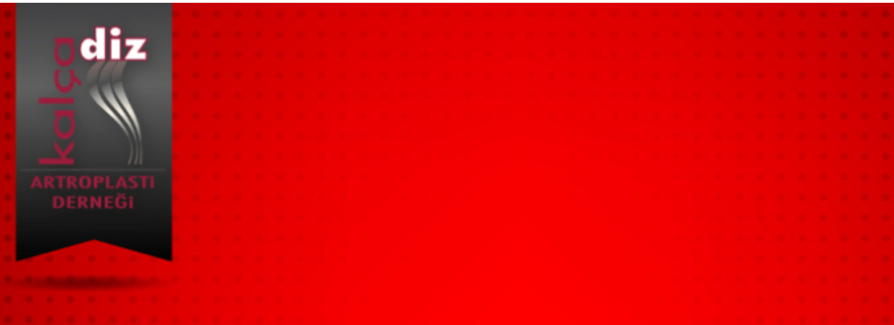

Sevgili Meslektaşlarım,
Antik çağda ağrının nedenlerini doğa üstü güçlerde arayan insan, zamanla tıbbın ilerlemesi ile daha bilimsel arayışlar içine girmiştir. M.Ö. 4. yüzyılda yaşamış olan Hipokrat “Divinum est opus sedare dolorem” diyerek ağrıyı dindirmenin ilahi bir sanat olduğunu vurgulamıştır. Ortopedi ve Travmatoloji hekimleri olarak mesleğimizin günlük uygulamasında bizler de “Ağrı”yı tanımak ve tedavi etmek amacındayız.
Kalça Diz Artroplasti Derneği (KADAD) olarak bel, omuz, kalça ve diz ağrılarının tanı ve tadavisindeki yenilik ve çözüm arayışlarını tartışabilmek için “Ağrının Uzmanları” isimli bir toplantı düzenlemeye karar verdik.
Bu amaçla 4-5 Ekim 2021 tarihleri arasında Kıbrıs, Girne Merit Park Otel’de gerçekleştireceğimiz toplantıda siz değerli meslektaşlarımızı da aramızda görmekten büyük mutluluk duyacağız.
Kayıt için tıklayınız,
Yetkili,
Travel Plan
Telefon Numarası
Veysel Boğaz
05338756247
Prof. Dr. E. Ertuğrul Şener
Kalça Diz Artroplasti Derneği Başkanı
